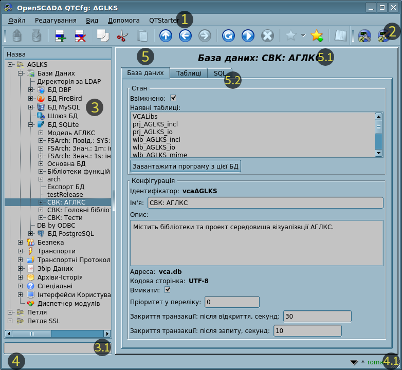
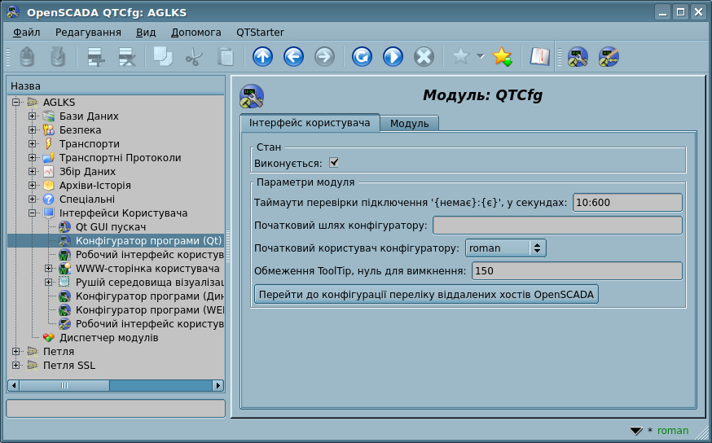
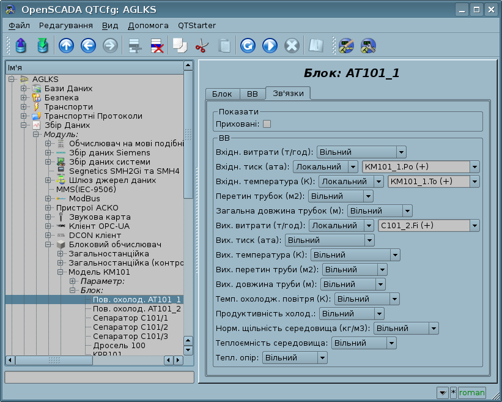

| Модуль |
Ім'я |
Версія |
Ліцензія |
Джерело |
Мови |
Платформи |
Тип |
Автор |
Опис
|
| QTCfg |
Конфігуратор програми (Qt)
|
5.0 |
GPL2 |
ui_QTCfg.so |
en,uk,ru,de |
x86,x86_64,ARM
|
Користувацькі інтерфейси |
Роман Савоченко |
Надає заснований на Qt конфігуратор OpenSCADA.
- - доповнити вкладками та вкладкою "Обране" із: процедурами, улюбленим імпортом або інші користувацькі функції швидкого доступу.
|
Модуль надає конфігуратор OpenSCADA, який засновано на багатоплатформеній бібліотеці Qt графічного користувацького інтерфейсу (GUI), початково створеного фірмою TrollTech.
У основі модуля лежить мова інтерфейсу управління OpenSCADA, що означає надання єдиного інтерфейсу конфігурації. Оновлення модуля може знадобитися тільки у випадку оновлення специфікації мови інтерфейсу управління. Для запиту контексту сторінки використовується груповий запит інтерфейсу управління, що дозволяє оптимізувати час віддаленого доступу за високо-латентними та повільними каналами зв'язку.
Розглянемо робоче вікно конфігуратору на рисунку 1.
 Рис.1. Робоче вікно конфігуратору.
Робоче вікно конфігуратору складається з наступних частин:
- 1 Меню — містить меню конфігуратору, що випадає.
- 2 Панель інструментів — містить кнопки швидкого управління.
- 3 Навігатор — призначений для прямої навігації за деревом управління.
- 3.1 Поле вводу тексту для пошуку елементу у поточній гілці дерева.
- 4 Рядок статусу — відображає стан конфігуратора з кнопкою виклику історії рядку статусу.
- 4.1 Індикатор/обрання користувача — відображає поточного користувача, подвійним кліком відкривається діалог вибору користувача. Також містить індикатор факту внесення змін до конфігурації.
- 5 Робоче поле — поділено на частини:
- 5.1 Ім'я вузла — містить ім'я поточного вузла.
- 5.2 Табулятор робочих областей — до табулятору розташовуються кореневі сторінки (області управління) вузла. Області управління наступних рівнів розташовуються у основному просторі контролю.
Меню конфігуратору містить наступні пункти:
- Файл — група загальних команд:
- Завантажити з БД — завантаження обраного об'єкту або гілки об'єктів з БД.
- Примусово завантажити з БД — примусове завантаження обраного об'єкту або гілки об'єктів з БД, не тільки коли змінено.
- Зберегти у БД — збереження обраного об'єкту або гілки об'єктів у БД.
- Примусово зберегти у БД — примусове збереження обраного об'єкту або гілки об'єктів у БД, не тільки коли змінено.
- Закрити — закриття вікна конфігуратору.
- Вихід — завершення роботи програми.
- Редагування — команди редагування:
- Додати — додання нового об'єкту до контейнеру.
- Видалити — видалення обраного об'єкту.
- Копіювати елемент — копіювання обраного об'єкту.
- Вирізати елемент — вирізання обраного об'єкту. Початковий об'єкт видаляється після вставки.
- Вставити елемент — вставка скопійованого або вирізаного елементу.
- Вид — команди навігації та управління видом:
- Нагору — піднятися вверх по дереву.
- Попередня — відкриття попередньої сторінки, що відкривалася.
- Наступна — відкриття наступної сторінки, що відкривалася.
- Оновити — оновлення вмісту поточної сторінки.
- Запустити — запуск періодичного оновлення вмісту поточної сторінки з інтервалом одна секунда.
- Зупинити — зупинка періодичного оновлення вмісту поточної сторінки з інтервалом одна секунда.
- Допомога — команди виклику допомоги:
- Про — інформація про цей модуль та OpenSCADA.
- Про Qt — інформація про бібліотеку Qt.
- Підручник на 'QTCfg' — виклик локального або віддаленого підручника по модулю QTCfg.
- Підручник на 'OpenSCADA 0.9' — виклик локального або віддаленого індексу посилань на документацію та підручники на OpenSCADA.
- Підручник на сторінку — виклик локального або віддаленого підручника обраної сторінки.
- Що це — запит інформації за елементами інтерфейсу та отримання їх повної контекстної допомоги.
Панель інструментів містить наступні кнопки швидкого управління (зліва на право):
- Завантажити з БД — завантаження обраного об'єкту або гілки об'єктів з БД.
- Зберегти у БД — збереження обраного об'єкту або гілки об'єктів у БД.
- Нагору — підняття нагору по дереву.
- Попередня — відкриття попередньої сторінки, що відкривалася.
- Наступна — відкриття наступної сторінки, що відкривалася.
- Додати — додання нового об'єкту до контейнеру.
- Видалити — видалення обраного об'єкту.
- Копіювати елемент — копіювання обраного об'єкту.
- Вирізати елемент — вирізання обраного об'єкту. Початковий об'єкт видаляється після вставки.
- Вставити елемент — вставка скопійованого або вирізаного елементу.
- Оновити — оновлення вмісту поточної сторінки.
- Запустити — запуск періодичного оновлення вмісту поточної сторінки з інтервалом одна секунда.
- Зупинити — зупинка періодичного оновлення вмісту поточної сторінки з інтервалом одна секунда.
- Підручник на сторінку — виклик локального або віддаленого підручника обраної сторінки.
- Кнопки виклику модулів графічних інтерфейсів OpenSCADA на бібліотеці Qt.
У дереві навігації підтримується контекстне меню наступного вмісту:
- Завантажити з БД — завантаження обраного об'єкту або гілки об'єктів з БД.
- Зберегти у БД — збереження обраного об'єкту або гілки об'єктів у БД.
- Додати — додання нового об'єкту до контейнеру.
- Видалити — видалення обраного об'єкту.
- Копіювати елемент — копіювання обраного об'єкту.
- Вирізати елемент — вирізання обраного об'єкту. Початковий об'єкт видаляється після вставки.
- Вставити елемент — вставка скопійованого або вирізаного елементу.
- Оновити елементи дерева — оновлення вмісту дерева навігації.
Елементи управління поділяються на: базові, команди, переліки, таблиці та зображення. Всі елементи відображаються у послідовності, яка суворо відповідає їх розташуванню у описі мови інтерфейсу управління.
1 Конфігурація
Для налаштування власної поведінки у окремих випадках, модулем надається можливість налаштування параметрів за посередництвом інтерфейсу управління OpenSCADA (рис.2). Такими параметрами є:
- Таймаути перевірки підключення, у секундах, "{немає}:{є}" — інколи (для тунелю SSH) корисно зменшити таймаут перевірки наявності підключення до 30 секунд з метою утримання підключення.
- Початковий шлях конфігуратору — дозволяє визначити, яку локальну сторінку відкривати при запуску конфігуратору.
- Початковий користувач конфігуратору — вказує, від ім'я якого користувача відкривати конфігуратор без запиту пароля.
- Обмеження ToolTip, у символах, для запобігання спливання великих вікон допомоги, по замовченню 150. Встановити нуль для вимкнення.
- Перехід на сторінку конфігурації переліку зовнішніх OpenSCADA станцій, що використовується для надання можливості віддаленої конфігурації.
 Рис.2. Сторінка конфігурації самого конфігуратору.
Вертикально масштабовані поля (перелік, текст та таблиця) передбачають автоматичне масштабування на наявний простір та під вміст полів. Окрім цього, для них доступна можливість ручної зміни висоти шляхом хапання за нижній край віджета та перетягування його, що однак працює не для всіх стилів віджетів Qt.
2 Базові елементи
До числа базових елементів входять: інформаційні елементи, поля вводу значень, елементи обрання з переліку, прапорці-ознаки, текстові поля. У випадку відсутності ім'я елементу, базовий елемент приєднується до попереднього базового елементу. Приклад групи базових елементів з приєднанням наведено на рисунку 3.
Для елементів вводу, які не передбачають миттєвих змін та можуть тривалий час редагуватися перед остаточним завершенням, передбачено механізм підтвердження. Цей механізм дозволяє виключити затримки при редагуванні, особливо у випадках конфігурації віддалених станцій, та вносити зміни за підтвердженням. До елементів вводу з підтвердженням відносяться: поля вводу рядків тексту або чисельних значень та текстові поля. Підтвердження здійснюється натиском кнопки, яка з'являється поряд з полем вводу після початку редагування.
Текстові поля також підтримують підсвічення синтаксису, правила чого передаються у вигляді регулярних виразів з інтерфейсу управління.
 Рис.3. Приєднання базових елементів.
3 Команди
Команди — це елементи передачі визначених вказівок дії вузлу та організації посилань-переходів на інші сторінки. Команди можуть містити параметри. Параметри формуються з базових елементів. Приклад команди з параметрами приведено на рисунку 4.
4 Переліки
Переліки містять групу базових елементів одного типу. Операції над елементами доступні через контекстне меню переліку. Через елементи переліку можуть виконуватися операції переходу на інші сторінки, зазвичай дочірні. Перехід здійснюється посередництвом подвійного кліку мишею на елементі переліку. Переліки можуть бути індексованими. Приклад переліку наведено на рисунку 5.
5 Таблиці
Таблиці містять значення базових елементів. Тип базового елементу є індивідуальним для кожного стовпчика. Приклад таблиці наведено на рисунку 6. Операції над структурою таблиці, для редагованих таблиць, доступні за посередництвом контекстного меню. Редагування елементів таблиці здійснюється шляхом подвійного кліку по потрібній клітинці.
6 Зображення
Зображення закликано передавати графічну інформацію до конфігураторів. Приклад зображення наведено на рисунку 7.
{kind=link}
{kind=link}
{kind=link}
{kind=link}
{kind=link}
{kind=link}
{kind=link}